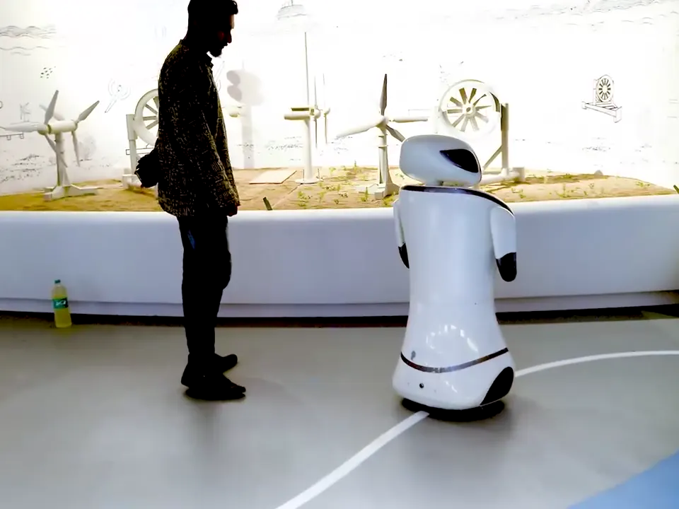
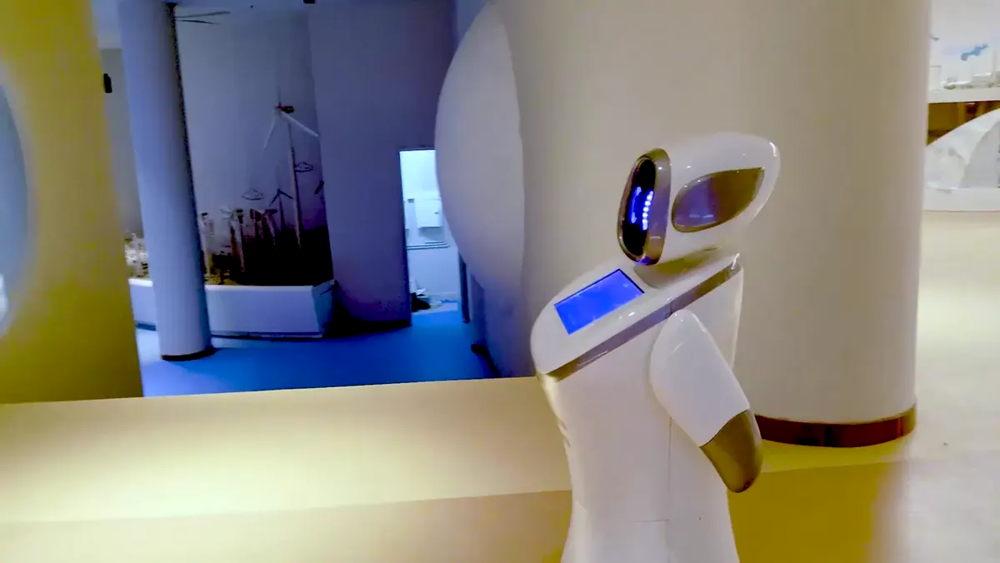

Autonomous Robotics
Curio — Museum Guidance Robot
Guidance robot for the Kolkata Museum that navigates the exhibit halls and answers visitor questions about science and technology exhibits.
- ROS 2
- Nav2
- SLAM
- Jetson Nano
- Atmega2560
- PCB design
01Project overview
Curio is a wheeled guidance robot built for the Kolkata Museum. Visitors can interact with the robot, ask science and technology questions, and hear explanations of the museum’s exhibits.
Objective
Give museum visitors an interactive guide that can move through the galleries and explain every exhibit.
My contribution
- Led development of Curio’s hardware and software within the R&D department.
- Designed and implemented custom PCB solutions for the robot.
- Implemented ROS 2-based navigation and SLAM on a Jetson Nano.
- Developed software modules to reduce overall system latency.
02System architecture
- Interaction
- Visitor question & answer about science and technology exhibits
- Autonomy & compute
- Jetson Nano
- ROS 2 navigation (Nav2)
- SLAM
- Embedded electronics
- Atmega2560 microcontroller
- Custom PCBs
03Hardware architecture
- Main compute
- NVIDIA Jetson Nano
- Microcontroller
- Atmega2560
- Electronics
- Custom-designed PCBs
04Software architecture
- ROS 2
- Nav2
- SLAM
05Validation and results
- Robot autonomy improved by 40% after implementing ROS 2 navigation and SLAM (as stated in CV).
- System latency reduced by 25% through new software modules (as stated in CV).
06Gallery



